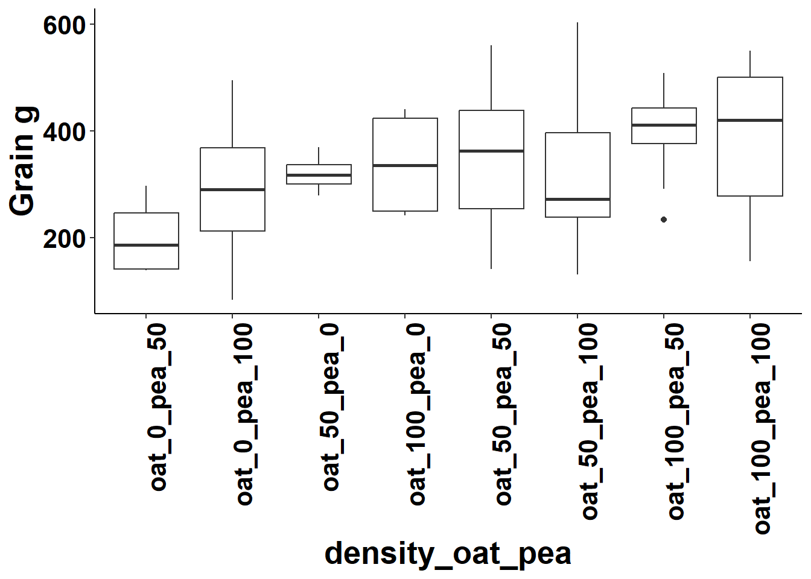
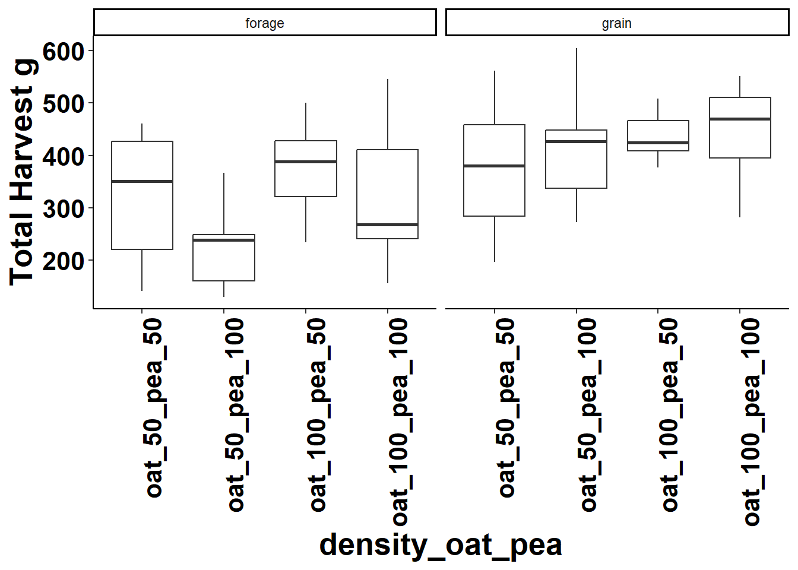
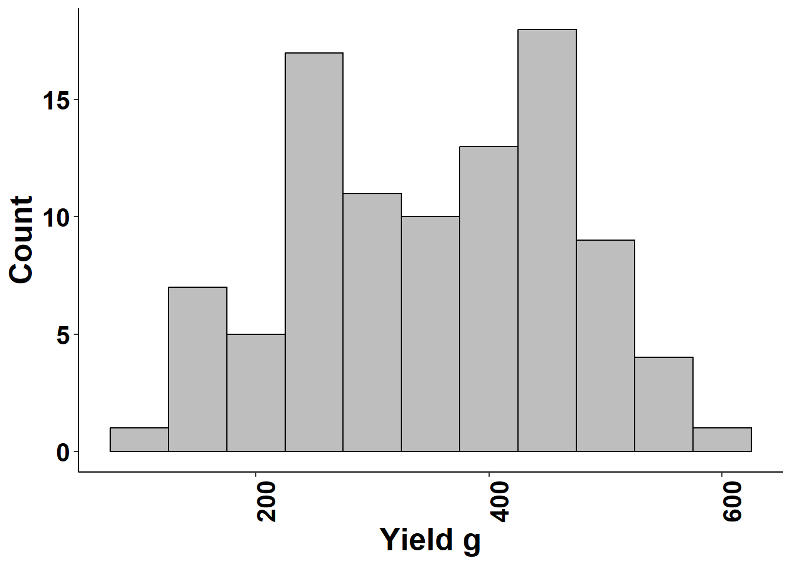
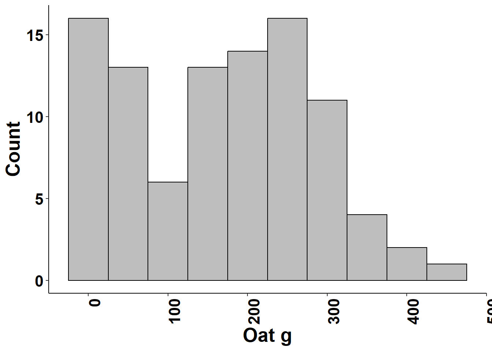
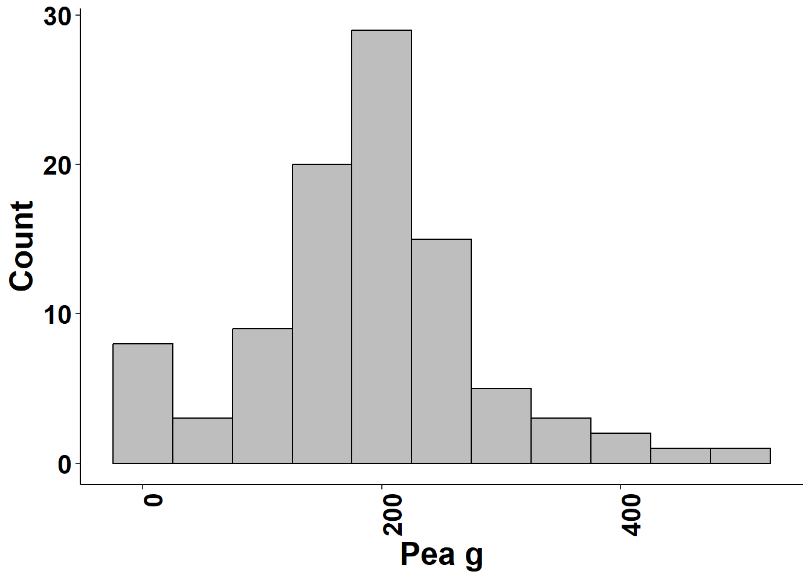
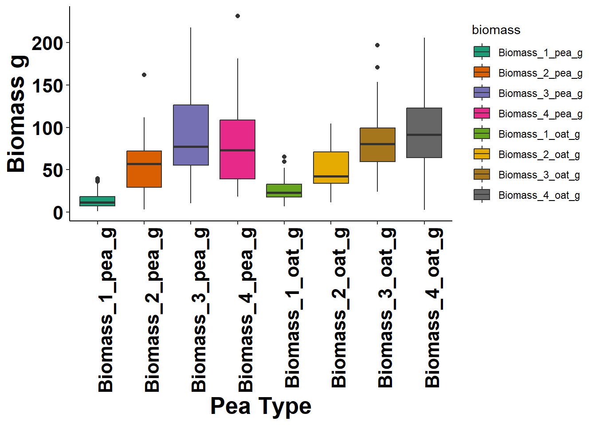
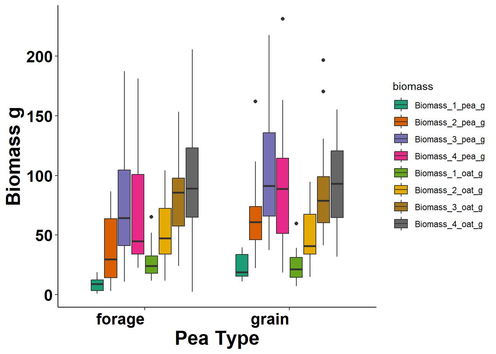

Last updated: 2024-08-21
Checks: 7 0
Knit directory: Oat-Pea-Intercropping/
This reproducible R Markdown analysis was created with workflowr (version 1.7.1). The Checks tab describes the reproducibility checks that were applied when the results were created. The Past versions tab lists the development history.
Great! Since the R Markdown file has been committed to the Git repository, you know the exact version of the code that produced these results.
Great job! The global environment was empty. Objects defined in the global environment can affect the analysis in your R Markdown file in unknown ways. For reproduciblity it’s best to always run the code in an empty environment.
The command set.seed(20240821) was run prior to running
the code in the R Markdown file. Setting a seed ensures that any results
that rely on randomness, e.g. subsampling or permutations, are
reproducible.
Great job! Recording the operating system, R version, and package versions is critical for reproducibility.
Nice! There were no cached chunks for this analysis, so you can be confident that you successfully produced the results during this run.
Great job! Using relative paths to the files within your workflowr project makes it easier to run your code on other machines.
Great! You are using Git for version control. Tracking code development and connecting the code version to the results is critical for reproducibility.
The results in this page were generated with repository version 570e37c. See the Past versions tab to see a history of the changes made to the R Markdown and HTML files.
Note that you need to be careful to ensure that all relevant files for
the analysis have been committed to Git prior to generating the results
(you can use wflow_publish or
wflow_git_commit). workflowr only checks the R Markdown
file, but you know if there are other scripts or data files that it
depends on. Below is the status of the Git repository when the results
were generated:
Ignored files:
Ignored: .Rhistory
Ignored: .Rproj.user/
Untracked files:
Untracked: Omega_2.dat
Untracked: Omega_3.dat
Untracked: Omega_4.dat
Untracked: R.dat
Untracked: analysis/cover_6_1.jpg
Untracked: code/2024 Winter Oat Pea Summary Statistics.R
Untracked: data/2023_5_18_sub_height.xlsx
Untracked: data/2023_6_1_sub_height.xlsx
Untracked: data/2023_6_20_sub_height.xlsx
Untracked: data/2023_7_8_sub_height.xlsx
Untracked: data/2023_8_1_sub_height.xlsx
Untracked: data/2023_location_weather.xlsx
Untracked: data/2023_oat_pea_data.xlsx
Untracked: data/Cornell_WinterOatPeaIntercrop_2024_Ithaca.csv
Untracked: data/Cornell_WinterOatPeaIntercrop_2024_Ithaca_plot_meta.xlsx
Untracked: data/cover_summary.xlsx
Untracked: data/multi_location_data.xlsx
Untracked: data/plot_meta.csv
Untracked: data/plot_no_conversion.xlsx
Untracked: mu.dat
Note that any generated files, e.g. HTML, png, CSS, etc., are not included in this status report because it is ok for generated content to have uncommitted changes.
These are the previous versions of the repository in which changes were
made to the R Markdown (analysis/densisy-analysis.Rmd) and
HTML (docs/densisy-analysis.html) files. If you’ve
configured a remote Git repository (see ?wflow_git_remote),
click on the hyperlinks in the table below to view the files as they
were in that past version.
| File | Version | Author | Date | Message |
|---|---|---|---|---|
| Rmd | 570e37c | pthyde123 | 2024-08-21 | Migrate existing documents and first publish |
library(RColorBrewer)
library(tidyverse)
library(readxl)
library(kableExtra)density <- read_excel("data/2023_oat_pea_data.xlsx",
sheet = "density")
| pea_type | oat_grain_g | pea_grain_g | oatName | peaName | oatDens | peaDens | oat_percent | pea_percent | total_grain | inter_crop | density_oat_pea |
|---|---|---|---|---|---|---|---|---|---|---|---|
| forage | 179.9 | 208.4 | IL17-7339 | AUSTRIAN FIELD PEAS | 3 | 2 | 100 | 50 | 388.3 | IL17-7339_AUSTRIAN FIELD PEAS | oat_100_pea_50 |
| grain | 150.4 | 163.8 | IL17-7339 | delta field pea | 2 | 2 | 50 | 50 | 314.2 | IL17-7339_delta field pea | oat_50_pea_50 |
| forage | 205.5 | 224.7 | OT7100 | AUSTRIAN FIELD PEAS | 3 | 2 | 100 | 50 | 430.2 | OT7100_AUSTRIAN FIELD PEAS | oat_100_pea_50 |
| forage | 256.3 | 176.8 | IL17-1253 | Icicle Winter Peas | 2 | 2 | 50 | 50 | 433.1 | IL17-1253_Icicle Winter Peas | oat_50_pea_50 |
| grain | 0.0 | 297.3 | IL17-1253 | delta field pea | 1 | 2 | 0 | 50 | 297.3 | IL17-1253_delta field pea | oat_0_pea_50 |
| forage | 8.0 | 232.8 | IL17-1253 | AUSTRIAN FIELD PEAS | 3 | 3 | 100 | 100 | 240.8 | IL17-1253_AUSTRIAN FIELD PEAS | oat_100_pea_100 |
| grain | 238.6 | 223.7 | OT7100 | delta field pea | 2 | 2 | 50 | 50 | 462.3 | OT7100_delta field pea | oat_50_pea_50 |
| grain | 325.1 | 150.6 | ND180256 | DS Admiral | 3 | 2 | 100 | 50 | 475.7 | ND180256_DS Admiral | oat_100_pea_50 |
| grain | 154.4 | 306.1 | IL17-1253 | DS Admiral | 2 | 3 | 50 | 100 | 460.5 | IL17-1253_DS Admiral | oat_50_pea_100 |
| forage | 149.9 | 395.5 | ND180256 | Icicle Winter Peas | 3 | 3 | 100 | 100 | 545.4 | ND180256_Icicle Winter Peas | oat_100_pea_100 |
| na | 370.2 | 0.0 | OT7100 | AUSTRIAN FIELD PEAS | 2 | 1 | 50 | 0 | 370.2 | OT7100_AUSTRIAN FIELD PEAS | oat_50_pea_0 |
| grain | 303.5 | 199.8 | OT7100 | DS Admiral | 3 | 3 | 100 | 100 | 503.3 | OT7100_DS Admiral | oat_100_pea_100 |
| forage | 283.1 | 146.4 | IL17-7339 | Icicle Winter Peas | 2 | 2 | 50 | 50 | 429.5 | IL17-7339_Icicle Winter Peas | oat_50_pea_50 |
| grain | 221.2 | 329.9 | IL17-1253 | DS Admiral | 3 | 3 | 100 | 100 | 551.1 | IL17-1253_DS Admiral | oat_100_pea_100 |
| forage | 69.3 | 165.3 | OT7100 | Icicle Winter Peas | 2 | 3 | 50 | 100 | 234.6 | OT7100_Icicle Winter Peas | oat_50_pea_100 |
| grain | 323.9 | 149.9 | OT7100 | DS Admiral | 3 | 2 | 100 | 50 | 473.8 | OT7100_DS Admiral | oat_100_pea_50 |
| grain | 235.4 | 252.6 | IL17-7339 | DS Admiral | 3 | 3 | 100 | 100 | 488.0 | IL17-7339_DS Admiral | oat_100_pea_100 |
| grain | 67.8 | 205.2 | IL17-1253 | delta field pea | 2 | 3 | 50 | 100 | 273.0 | IL17-1253_delta field pea | oat_50_pea_100 |
| forage | 176.6 | 247.7 | IL17-7339 | AUSTRIAN FIELD PEAS | 3 | 2 | 100 | 50 | 424.3 | IL17-7339_AUSTRIAN FIELD PEAS | oat_100_pea_50 |
| forage | 196.5 | 248.0 | ND180256 | AUSTRIAN FIELD PEAS | 3 | 2 | 100 | 50 | 444.5 | ND180256_AUSTRIAN FIELD PEAS | oat_100_pea_50 |
| forage | 0.0 | 83.6 | IL17-1253 | AUSTRIAN FIELD PEAS | 1 | 3 | 0 | 100 | 83.6 | IL17-1253_AUSTRIAN FIELD PEAS | oat_0_pea_100 |
| na | 279.0 | 0.0 | ND180256 | AUSTRIAN FIELD PEAS | 2 | 1 | 50 | 0 | 279.0 | ND180256_AUSTRIAN FIELD PEAS | oat_50_pea_0 |
| forage | 60.4 | 184.0 | IL17-7339 | Icicle Winter Peas | 2 | 3 | 50 | 100 | 244.4 | IL17-7339_Icicle Winter Peas | oat_50_pea_100 |
| grain | 153.6 | 450.1 | ND180256 | delta field pea | 2 | 3 | 50 | 100 | 603.7 | ND180256_delta field pea | oat_50_pea_100 |
| na | 419.1 | 0.0 | IL17-7339 | AUSTRIAN FIELD PEAS | 3 | 1 | 100 | 0 | 419.1 | IL17-7339_AUSTRIAN FIELD PEAS | oat_100_pea_0 |
| grain | 227.5 | 317.6 | IL17-7339 | delta field pea | 3 | 3 | 100 | 100 | 545.1 | IL17-7339_delta field pea | oat_100_pea_100 |
| na | 440.8 | 0.0 | OT7100 | AUSTRIAN FIELD PEAS | 3 | 1 | 100 | 0 | 440.8 | OT7100_AUSTRIAN FIELD PEAS | oat_100_pea_0 |
| grain | 0.0 | 495.4 | IL17-1253 | delta field pea | 1 | 3 | 0 | 100 | 495.4 | IL17-1253_delta field pea | oat_0_pea_100 |
| grain | 280.1 | 232.9 | OT7100 | delta field pea | 2 | 2 | 50 | 50 | 513.0 | OT7100_delta field pea | oat_50_pea_50 |
| grain | 238.9 | 321.9 | IL17-1253 | DS Admiral | 2 | 2 | 50 | 50 | 560.8 | IL17-1253_DS Admiral | oat_50_pea_50 |
| grain | 259.7 | 207.7 | ND180256 | delta field pea | 3 | 3 | 100 | 100 | 467.4 | ND180256_delta field pea | oat_100_pea_100 |
| forage | 220.9 | 239.5 | ND180256 | Icicle Winter Peas | 2 | 2 | 50 | 50 | 460.4 | ND180256_Icicle Winter Peas | oat_50_pea_50 |
| grain | 244.7 | 186.5 | IL17-1253 | DS Admiral | 3 | 3 | 100 | 100 | 431.2 | IL17-1253_DS Admiral | oat_100_pea_100 |
| grain | 234.5 | 210.1 | IL17-1253 | delta field pea | 2 | 2 | 50 | 50 | 444.6 | IL17-1253_delta field pea | oat_50_pea_50 |
| grain | 184.0 | 252.3 | OT7100 | DS Admiral | 2 | 3 | 50 | 100 | 436.3 | OT7100_DS Admiral | oat_50_pea_100 |
| grain | 124.1 | 345.1 | ND180256 | DS Admiral | 3 | 3 | 100 | 100 | 469.2 | ND180256_DS Admiral | oat_100_pea_100 |
| forage | 306.1 | 96.1 | IL17-1253 | Icicle Winter Peas | 3 | 2 | 100 | 50 | 402.2 | IL17-1253_Icicle Winter Peas | oat_100_pea_50 |
| forage | 57.5 | 177.0 | OT7100 | AUSTRIAN FIELD PEAS | 2 | 2 | 50 | 50 | 234.5 | OT7100_AUSTRIAN FIELD PEAS | oat_50_pea_50 |
| forage | 0.0 | 145.9 | ND180256 | AUSTRIAN FIELD PEAS | 2 | 3 | 50 | 100 | 145.9 | ND180256_AUSTRIAN FIELD PEAS | oat_50_pea_100 |
| forage | 0.0 | 178.7 | IL17-1253 | AUSTRIAN FIELD PEAS | 2 | 3 | 50 | 100 | 178.7 | IL17-1253_AUSTRIAN FIELD PEAS | oat_50_pea_100 |
| forage | 0.0 | 138.9 | IL17-1253 | AUSTRIAN FIELD PEAS | 1 | 2 | 0 | 50 | 138.9 | IL17-1253_AUSTRIAN FIELD PEAS | oat_0_pea_50 |
| forage | 215.7 | 76.2 | IL17-7339 | Icicle Winter Peas | 3 | 2 | 100 | 50 | 291.9 | IL17-7339_Icicle Winter Peas | oat_100_pea_50 |
| forage | 200.9 | 117.4 | IL17-1253 | Icicle Winter Peas | 3 | 2 | 100 | 50 | 318.3 | IL17-1253_Icicle Winter Peas | oat_100_pea_50 |
| forage | 0.0 | 155.4 | IL17-7339 | AUSTRIAN FIELD PEAS | 2 | 3 | 50 | 100 | 155.4 | IL17-7339_AUSTRIAN FIELD PEAS | oat_50_pea_100 |
| forage | 257.9 | 67.0 | OT7100 | Icicle Winter Peas | 3 | 2 | 100 | 50 | 324.9 | OT7100_Icicle Winter Peas | oat_100_pea_50 |
| forage | 229.1 | 115.4 | OT7100 | Icicle Winter Peas | 3 | 3 | 100 | 100 | 344.5 | OT7100_Icicle Winter Peas | oat_100_pea_100 |
| grain | 40.2 | 386.7 | IL17-7339 | DS Admiral | 2 | 3 | 50 | 100 | 426.9 | IL17-7339_DS Admiral | oat_50_pea_100 |
| grain | 178.2 | 198.5 | ND180256 | delta field pea | 3 | 2 | 100 | 50 | 376.7 | ND180256_delta field pea | oat_100_pea_50 |
| na | 308.9 | 0.0 | IL17-1253 | AUSTRIAN FIELD PEAS | 2 | 1 | 50 | 0 | 308.9 | IL17-1253_AUSTRIAN FIELD PEAS | oat_50_pea_0 |
| grain | 189.5 | 218.7 | IL17-7339 | delta field pea | 3 | 2 | 100 | 50 | 408.2 | IL17-7339_delta field pea | oat_100_pea_50 |
| grain | 167.4 | 270.1 | OT7100 | DS Admiral | 2 | 2 | 50 | 50 | 437.5 | OT7100_DS Admiral | oat_50_pea_50 |
| forage | 71.8 | 145.2 | ND180256 | AUSTRIAN FIELD PEAS | 2 | 2 | 50 | 50 | 217.0 | ND180256_AUSTRIAN FIELD PEAS | oat_50_pea_50 |
| grain | 107.9 | 216.3 | IL17-7339 | DS Admiral | 2 | 2 | 50 | 50 | 324.2 | IL17-7339_DS Admiral | oat_50_pea_50 |
| grain | 168.1 | 184.7 | OT7100 | delta field pea | 3 | 3 | 100 | 100 | 352.8 | OT7100_delta field pea | oat_100_pea_100 |
| forage | 26.6 | 222.4 | ND180256 | AUSTRIAN FIELD PEAS | 3 | 3 | 100 | 100 | 249.0 | ND180256_AUSTRIAN FIELD PEAS | oat_100_pea_100 |
| forage | 82.6 | 284.7 | IL17-1253 | Icicle Winter Peas | 2 | 3 | 50 | 100 | 367.3 | IL17-1253_Icicle Winter Peas | oat_50_pea_100 |
| grain | 253.8 | 189.9 | IL17-1253 | delta field pea | 3 | 2 | 100 | 50 | 443.7 | IL17-1253_delta field pea | oat_100_pea_50 |
| grain | 228.0 | 183.3 | ND180256 | DS Admiral | 3 | 2 | 100 | 50 | 411.3 | ND180256_DS Admiral | oat_100_pea_50 |
| grain | 132.4 | 209.1 | OT7100 | delta field pea | 2 | 3 | 50 | 100 | 341.5 | OT7100_delta field pea | oat_50_pea_100 |
| forage | 90.7 | 113.3 | IL17-7339 | AUSTRIAN FIELD PEAS | 2 | 2 | 50 | 50 | 204.0 | IL17-7339_AUSTRIAN FIELD PEAS | oat_50_pea_50 |
| grain | 301.7 | 122.3 | IL17-7339 | DS Admiral | 3 | 2 | 100 | 50 | 424.0 | IL17-7339_DS Admiral | oat_100_pea_50 |
| forage | 0.0 | 255.6 | IL17-1253 | Icicle Winter Peas | 1 | 3 | 0 | 100 | 255.6 | IL17-1253_Icicle Winter Peas | oat_0_pea_100 |
| forage | 310.0 | 190.8 | OT7100 | Icicle Winter Peas | 3 | 3 | 100 | 100 | 500.8 | OT7100_Icicle Winter Peas | oat_100_pea_100 |
| forage | 67.6 | 201.2 | IL17-7339 | Icicle Winter Peas | 3 | 3 | 100 | 100 | 268.8 | IL17-7339_Icicle Winter Peas | oat_100_pea_100 |
| grain | 243.2 | 153.3 | IL17-1253 | delta field pea | 3 | 2 | 100 | 50 | 396.5 | IL17-1253_delta field pea | oat_100_pea_50 |
| grain | 0.0 | 229.8 | IL17-1253 | DS Admiral | 1 | 2 | 0 | 50 | 229.8 | IL17-1253_DS Admiral | oat_0_pea_50 |
| grain | 125.4 | 135.8 | ND180256 | delta field pea | 2 | 2 | 50 | 50 | 261.2 | ND180256_delta field pea | oat_50_pea_50 |
| forage | 2.9 | 247.9 | OT7100 | AUSTRIAN FIELD PEAS | 2 | 3 | 50 | 100 | 250.8 | OT7100_AUSTRIAN FIELD PEAS | oat_50_pea_100 |
| na | 242.0 | 0.0 | IL17-1253 | AUSTRIAN FIELD PEAS | 3 | 1 | 100 | 0 | 242.0 | IL17-1253_AUSTRIAN FIELD PEAS | oat_100_pea_0 |
| forage | 27.9 | 128.5 | IL17-7339 | AUSTRIAN FIELD PEAS | 3 | 3 | 100 | 100 | 156.4 | IL17-7339_AUSTRIAN FIELD PEAS | oat_100_pea_100 |
| forage | 67.4 | 176.3 | ND180256 | Icicle Winter Peas | 2 | 3 | 50 | 100 | 243.7 | ND180256_Icicle Winter Peas | oat_50_pea_100 |
| grain | 131.5 | 143.3 | ND180256 | DS Admiral | 2 | 2 | 50 | 50 | 274.8 | ND180256_DS Admiral | oat_50_pea_50 |
| grain | 162.0 | 196.2 | ND180256 | delta field pea | 3 | 3 | 100 | 100 | 358.2 | ND180256_delta field pea | oat_100_pea_100 |
| na | 253.5 | 0.0 | ND180256 | AUSTRIAN FIELD PEAS | 3 | 1 | 100 | 0 | 253.5 | ND180256_AUSTRIAN FIELD PEAS | oat_100_pea_0 |
| forage | 146.7 | 264.2 | IL17-1253 | Icicle Winter Peas | 3 | 3 | 100 | 100 | 410.9 | IL17-1253_Icicle Winter Peas | oat_100_pea_100 |
| grain | 248.0 | 270.3 | IL17-1253 | delta field pea | 3 | 3 | 100 | 100 | 518.3 | IL17-1253_delta field pea | oat_100_pea_100 |
| na | 326.8 | 0.0 | IL17-7339 | AUSTRIAN FIELD PEAS | 2 | 1 | 50 | 0 | 326.8 | IL17-7339_AUSTRIAN FIELD PEAS | oat_50_pea_0 |
| forage | 359.7 | 56.9 | OT7100 | Icicle Winter Peas | 2 | 2 | 50 | 50 | 416.6 | OT7100_Icicle Winter Peas | oat_50_pea_50 |
| grain | 410.3 | 98.2 | IL17-1253 | DS Admiral | 3 | 2 | 100 | 50 | 508.5 | IL17-1253_DS Admiral | oat_100_pea_50 |
| grain | 129.0 | 152.9 | IL17-7339 | delta field pea | 3 | 3 | 100 | 100 | 281.9 | IL17-7339_delta field pea | oat_100_pea_100 |
| grain | 125.2 | 71.9 | IL17-7339 | DS Admiral | 2 | 2 | 50 | 50 | 197.1 | IL17-7339_DS Admiral | oat_50_pea_50 |
| forage | 223.0 | 112.4 | OT7100 | AUSTRIAN FIELD PEAS | 3 | 2 | 100 | 50 | 335.4 | OT7100_AUSTRIAN FIELD PEAS | oat_100_pea_50 |
| forage | 61.0 | 173.3 | IL17-1253 | AUSTRIAN FIELD PEAS | 3 | 2 | 100 | 50 | 234.3 | IL17-1253_AUSTRIAN FIELD PEAS | oat_100_pea_50 |
| grain | 76.7 | 219.1 | IL17-7339 | delta field pea | 2 | 3 | 50 | 100 | 295.8 | IL17-7339_delta field pea | oat_50_pea_100 |
| forage | 306.7 | 194.0 | ND180256 | Icicle Winter Peas | 3 | 2 | 100 | 50 | 500.7 | ND180256_Icicle Winter Peas | oat_100_pea_50 |
| forage | 201.7 | 200.6 | ND180256 | Icicle Winter Peas | 2 | 2 | 50 | 50 | 402.3 | ND180256_Icicle Winter Peas | oat_50_pea_50 |
| forage | 0.0 | 143.0 | IL17-1253 | Icicle Winter Peas | 1 | 2 | 0 | 50 | 143.0 | IL17-1253_Icicle Winter Peas | oat_0_pea_50 |
| forage | 40.7 | 212.0 | IL17-7339 | Icicle Winter Peas | 2 | 3 | 50 | 100 | 252.7 | IL17-7339_Icicle Winter Peas | oat_50_pea_100 |
| forage | 3.9 | 137.5 | IL17-1253 | AUSTRIAN FIELD PEAS | 2 | 2 | 50 | 50 | 141.4 | IL17-1253_AUSTRIAN FIELD PEAS | oat_50_pea_50 |
| grain | 66.1 | 271.3 | ND180256 | DS Admiral | 2 | 3 | 50 | 100 | 337.4 | ND180256_DS Admiral | oat_50_pea_100 |
| forage | 0.0 | 131.0 | ND180256 | AUSTRIAN FIELD PEAS | 2 | 3 | 50 | 100 | 131.0 | ND180256_AUSTRIAN FIELD PEAS | oat_50_pea_100 |
| grain | 0.0 | 326.1 | IL17-1253 | DS Admiral | 1 | 3 | 0 | 100 | 326.1 | IL17-1253_DS Admiral | oat_0_pea_100 |
| forage | 21.9 | 161.7 | OT7100 | AUSTRIAN FIELD PEAS | 3 | 3 | 100 | 100 | 183.6 | OT7100_AUSTRIAN FIELD PEAS | oat_100_pea_100 |
| grain | 193.4 | 254.4 | OT7100 | DS Admiral | 2 | 3 | 50 | 100 | 447.8 | OT7100_DS Admiral | oat_50_pea_100 |
| forage | 92.8 | 206.6 | IL17-1253 | AUSTRIAN FIELD PEAS | 2 | 2 | 50 | 50 | 299.4 | IL17-1253_AUSTRIAN FIELD PEAS | oat_50_pea_50 |
| grain | 296.0 | 128.3 | OT7100 | delta field pea | 3 | 2 | 100 | 50 | 424.3 | OT7100_delta field pea | oat_100_pea_50 |
\[ {yield} = \beta_{0} + \beta_{1}({oatName}) + \beta_{2}({peaName}) + \beta_{3}({pea\_percent}) + \beta_{4}({oat\_percent}) + \beta_{5}({oat\_percent}*{pea\_percent}) + \epsilon \]
Analysis of Variance Table
Response: (total_grain)
Df Sum Sq Mean Sq F value Pr(>F)
oatName 3 40845 13615 1.7397 0.16531
peaName 3 390546 130182 16.6345 1.570e-08 ***
pea_percent 2 57316 28658 3.6619 0.02997 *
oat_percent 2 175623 87812 11.2205 4.928e-05 ***
pea_percent:oat_percent 3 32098 10699 1.3672 0.25863
Residuals 82 641734 7826
---
Signif. codes: 0 '***' 0.001 '**' 0.01 '*' 0.05 '.' 0.1 ' ' 1Analysis of Variance Table
Response: (oat_grain_g)
Df Sum Sq Mean Sq F value Pr(>F)
oatName 3 96088 32029 9.4893 1.889e-05 ***
peaName 3 40924 13641 4.0415 0.009859 **
pea_percent 2 560030 280015 82.9599 < 2.2e-16 ***
oat_percent 2 277711 138856 41.1387 4.243e-13 ***
pea_percent:oat_percent 3 23022 7674 2.2735 0.086134 .
Residuals 82 276775 3375
---
Signif. codes: 0 '***' 0.001 '**' 0.01 '*' 0.05 '.' 0.1 ' ' 1Analysis of Variance Table
Response: (pea_grain_g)
Df Sum Sq Mean Sq F value Pr(>F)
oatName 3 27036 9012 1.8871 0.1382
peaName 3 188352 62784 13.1467 4.330e-07 ***
pea_percent 2 261416 130708 27.3697 7.847e-10 ***
oat_percent 2 11834 5917 1.2390 0.2950
pea_percent:oat_percent 3 2142 714 0.1495 0.9297
Residuals 82 391603 4776
---
Signif. codes: 0 '***' 0.001 '**' 0.01 '*' 0.05 '.' 0.1 ' ' 1
\[ {yield} = \beta_{0} + \beta_{1}({oatName}) + \beta_{2}({peaName}) + \beta_{3}({pea\_percent}) + \beta_{4}({oat\_percent}) + \beta_{5}({oatName}*{pea\_percent}) + \epsilon \]
Analysis of Variance Table
Response: (total_grain)
Df Sum Sq Mean Sq F value Pr(>F)
oatName 3 40845 13615 1.7334 0.1669
peaName 3 390546 130182 16.5747 1.911e-08 ***
pea_percent 2 57316 28658 3.6487 0.0305 *
oat_percent 2 175623 87812 11.1802 5.303e-05 ***
oatName:pea_percent 6 53348 8891 1.1320 0.3516
Residuals 79 620485 7854
---
Signif. codes: 0 '***' 0.001 '**' 0.01 '*' 0.05 '.' 0.1 ' ' 1Analysis of Variance Table
Response: (oat_grain_g)
Df Sum Sq Mean Sq F value Pr(>F)
oatName 3 96088 32029 9.2781 2.509e-05 ***
peaName 3 40924 13641 3.9515 0.01113 *
pea_percent 2 560030 280015 81.1131 < 2.2e-16 ***
oat_percent 2 277711 138856 40.2229 8.975e-13 ***
oatName:pea_percent 6 27076 4513 1.3072 0.26375
Residuals 79 272720 3452
---
Signif. codes: 0 '***' 0.001 '**' 0.01 '*' 0.05 '.' 0.1 ' ' 1Analysis of Variance Table
Response: (pea_grain_g)
Df Sum Sq Mean Sq F value Pr(>F)
oatName 3 27036 9012 1.8460 0.1456
peaName 3 188352 62784 12.8603 6.331e-07 ***
pea_percent 2 261416 130708 26.7733 1.326e-09 ***
oat_percent 2 11834 5917 1.2120 0.3031
oatName:pea_percent 6 8065 1344 0.2753 0.9470
Residuals 79 385680 4882
---
Signif. codes: 0 '***' 0.001 '**' 0.01 '*' 0.05 '.' 0.1 ' ' 1
\[
{yield} = \beta_{0} + \beta_{1}({oatName}) + \beta_{2}({peaName}) +
\beta_{3}({pea\_percent}) + \beta_{4}({oat\_percent}) +
\beta_{5}({peaName}*{oat\_percent}) + \epsilon
\]
Analysis of Variance Table
Response: (total_grain)
Df Sum Sq Mean Sq F value Pr(>F)
oatName 3 40845 13615 1.7102 0.1716
peaName 3 390546 130182 16.3524 2.337e-08 ***
pea_percent 2 57316 28658 3.5998 0.0319 *
oat_percent 2 175623 87812 11.0302 5.961e-05 ***
peaName:oat_percent 6 44913 7486 0.9403 0.4712
Residuals 79 628919 7961
---
Signif. codes: 0 '***' 0.001 '**' 0.01 '*' 0.05 '.' 0.1 ' ' 1Analysis of Variance Table
Response: (oat_grain_g)
Df Sum Sq Mean Sq F value Pr(>F)
oatName 3 96088 32029 10.0441 1.112e-05 ***
peaName 3 40924 13641 4.2778 0.007502 **
pea_percent 2 560030 280015 87.8101 < 2.2e-16 ***
oat_percent 2 277711 138856 43.5439 1.790e-13 ***
peaName:oat_percent 6 47876 7979 2.5022 0.028698 *
Residuals 79 251921 3189
---
Signif. codes: 0 '***' 0.001 '**' 0.01 '*' 0.05 '.' 0.1 ' ' 1Analysis of Variance Table
Response: (pea_grain_g)
Df Sum Sq Mean Sq F value Pr(>F)
oatName 3 27036 9012 2.3064 0.083042 .
peaName 3 188352 62784 16.0675 3.029e-08 ***
pea_percent 2 261416 130708 33.4503 2.992e-11 ***
oat_percent 2 11834 5917 1.5142 0.226295
peaName:oat_percent 6 85051 14175 3.6276 0.003134 **
Residuals 79 308695 3908
---
Signif. codes: 0 '***' 0.001 '**' 0.01 '*' 0.05 '.' 0.1 ' ' 1
\[ {yield} = \beta_{0} + \beta_{1}({oatName}) + \beta_{2}({pea\_type}) + \beta_{3}({oat\_percent}) + \beta_{4}({pea\_percent}) + \beta_{5}({pea\_type}*{pea\_percent}) + \epsilon \]
Analysis of Variance Table
Response: (total_grain)
Df Sum Sq Mean Sq F value Pr(>F)
oatName 3 41620 13873 1.5190 0.216889
pea_type 1 229397 229397 25.1167 3.727e-06 ***
oat_percent 1 83501 83501 9.1425 0.003459 **
pea_percent 1 15785 15785 1.7283 0.192798
pea_type:pea_percent 1 45850 45850 5.0201 0.028140 *
Residuals 72 657594 9133
---
Signif. codes: 0 '***' 0.001 '**' 0.01 '*' 0.05 '.' 0.1 ' ' 1Analysis of Variance Table
Response: (oat_grain_g)
Df Sum Sq Mean Sq F value Pr(>F)
oatName 3 48864 16288 3.1948 0.02851 *
pea_type 1 88591 88591 17.3768 8.426e-05 ***
oat_percent 1 124115 124115 24.3446 5.020e-06 ***
pea_percent 1 157133 157133 30.8210 4.463e-07 ***
pea_type:pea_percent 1 14588 14588 2.8613 0.09506 .
Residuals 72 367074 5098
---
Signif. codes: 0 '***' 0.001 '**' 0.01 '*' 0.05 '.' 0.1 ' ' 1Analysis of Variance Table
Response: (pea_grain_g)
Df Sum Sq Mean Sq F value Pr(>F)
oatName 3 17317 5772 1.3567 0.262937
pea_type 1 32874 32874 7.7265 0.006938 **
oat_percent 1 4011 4011 0.9428 0.334815
pea_percent 1 73312 73312 17.2308 8.964e-05 ***
pea_type:pea_percent 1 8714 8714 2.0480 0.156732
Residuals 72 306337 4255
---
Signif. codes: 0 '***' 0.001 '**' 0.01 '*' 0.05 '.' 0.1 ' ' 1
Yield data looks somewhat normally distributed


sessionInfo()R version 4.2.3 (2023-03-15 ucrt)
Platform: x86_64-w64-mingw32/x64 (64-bit)
Running under: Windows 10 x64 (build 19045)
Matrix products: default
locale:
[1] LC_COLLATE=English_United States.utf8
[2] LC_CTYPE=English_United States.utf8
[3] LC_MONETARY=English_United States.utf8
[4] LC_NUMERIC=C
[5] LC_TIME=English_United States.utf8
attached base packages:
[1] stats graphics grDevices utils datasets methods base
other attached packages:
[1] kableExtra_1.4.0 readxl_1.4.3 lubridate_1.9.3 forcats_1.0.0
[5] stringr_1.5.1 dplyr_1.1.3 purrr_1.0.2 readr_2.1.5
[9] tidyr_1.3.1 tibble_3.2.1 ggplot2_3.4.4 tidyverse_2.0.0
[13] RColorBrewer_1.1-3 workflowr_1.7.1
loaded via a namespace (and not attached):
[1] Rcpp_1.0.12 svglite_2.1.3 getPass_0.2-4 ps_1.7.6
[5] rprojroot_2.0.4 digest_0.6.34 utf8_1.2.4 R6_2.5.1
[9] cellranger_1.1.0 evaluate_0.23 highr_0.10 httr_1.4.7
[13] pillar_1.9.0 rlang_1.1.1 rstudioapi_0.15.0 whisker_0.4.1
[17] callr_3.7.3 jquerylib_0.1.4 rmarkdown_2.25 labeling_0.4.3
[21] munsell_0.5.0 compiler_4.2.3 httpuv_1.6.14 xfun_0.41
[25] pkgconfig_2.0.3 systemfonts_1.0.5 htmltools_0.5.7 tidyselect_1.2.0
[29] fansi_1.0.5 viridisLite_0.4.2 tzdb_0.4.0 withr_3.0.0
[33] later_1.3.2 grid_4.2.3 jsonlite_1.8.8 gtable_0.3.4
[37] lifecycle_1.0.4 git2r_0.33.0 magrittr_2.0.3 scales_1.3.0
[41] cli_3.6.1 stringi_1.8.3 cachem_1.0.8 farver_2.1.1
[45] fs_1.6.3 promises_1.2.1 xml2_1.3.6 bslib_0.6.1
[49] generics_0.1.3 vctrs_0.6.4 tools_4.2.3 glue_1.6.2
[53] hms_1.1.3 processx_3.8.3 fastmap_1.1.1 yaml_2.3.8
[57] timechange_0.3.0 colorspace_2.1-0 knitr_1.45 sass_0.4.8